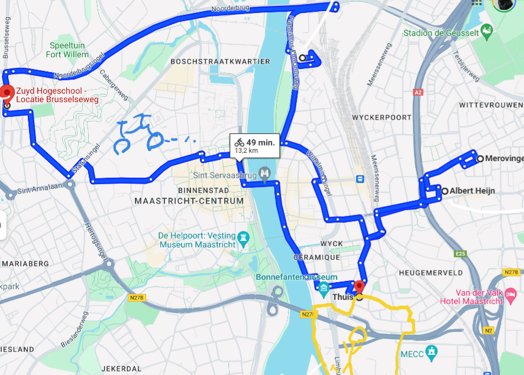
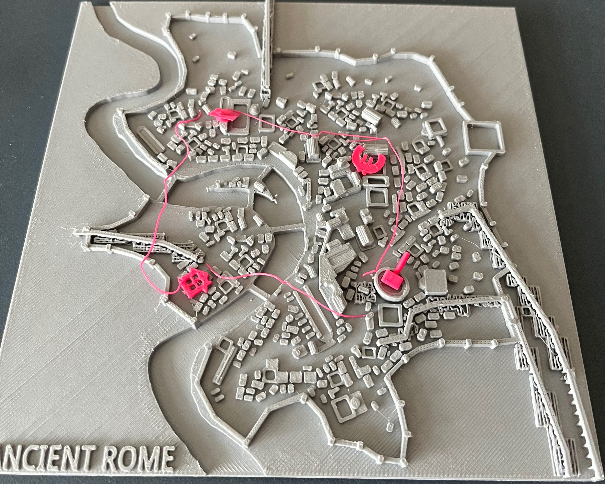
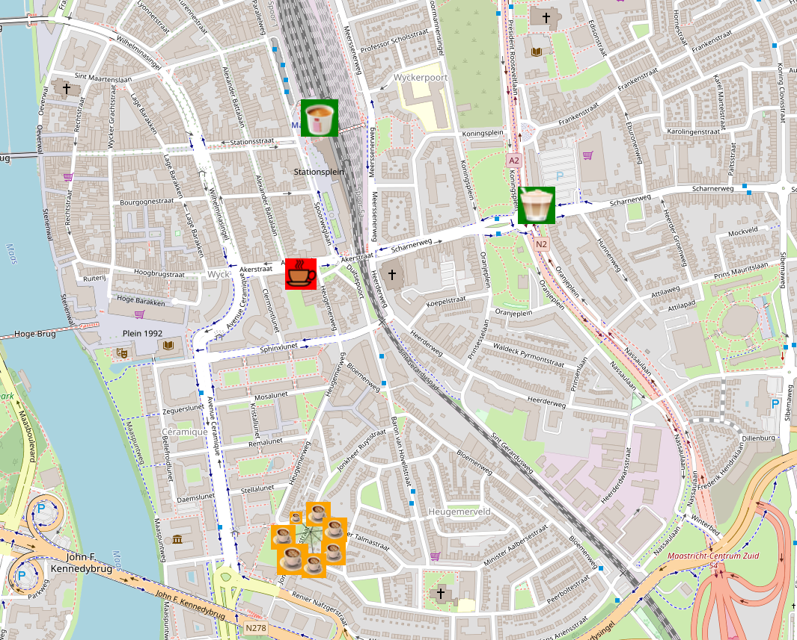

This is a complete overview of all of my Visual Summaries made for the minor VisInt, of each week, published on this website.
The source code on GitHub can be found here
This is fully based on the Portfolio document and archives found in a private OneDrive.
And this website also includes links to visuals made as websites as can be found in Week 3 for example.
To make a visual of the first classday of my first week,
I made a concept of a day travelling through Maastricht, going to Zuyd, going to work, taking a walk.
The story behind this is that I wanted to show others what my average day looks like.

To visualise a similar day as in Week 1, the idea came to make a touchable physical version of it to further use the senses.
There was also the idea to put myself in a different location which ended up being Rome at 250AD just cause it interested me.
The idea is that my day travelling through Rome has been visualised as if it was me right now travelling there.

The Visual Summary for this week I made a visualisation of all of the coffee I drank with their exact locations and made it into a simple interactive visual.
This one can be found here: Coffee Visual
The story behind this visual is that I wanted to show people how much coffee I drink, which I enjoy the most and see if there is a correlation as to where.
Underneath this paragraph you can also find a screenshot of the visual and the table of used data inside the visual.
